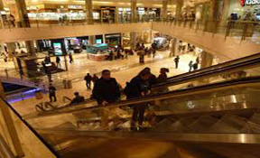

A finales de la década de 1980 se iniciaron las pláticas con el Gobierno del Estado de Veracruz de Ignacio de la Llave para crear un espacio donde se exhibiera la fauna marina de la región y aprovecharlo para apoyar el sector turístico. Se escogió el playón de Hornos debido a su cercanía con la zona turística, la protección que brindaba contra los vientos del norte y el abastecimiento de agua de mar.
Para fines de 1992 se terminaría de construir la obra dirigida por el ingeniero Luis Kasuga Osaka y diseñada por el Ingeniero Hiroshi Kamio, inaugurándose así el 13 de noviembre de ese mismo año, siendo el Ing. Baltasar Pazos de la Torre el primer Presidente de su Consejo de Administración. A partir de 2000 se inició una primera fase de ampliación (concluida en el año 2002) y cambió de imagen que incluyó la construcción de un recinto para tiburones y otro para manatíes, además de una terraza y un paseo en la parte exterior de la plaza, dando con esto a los visitantes una opción más para disfrutar del mar en su explanada de más de 300 metros, lo que le permitió obtener un crecimiento del 75% en el número de visitas.
El Tajín es una zona arqueológica precolombina cerca de la ciudad de Papantla, Veracruz, México. La ciudad de Tajín se cree que fue la capital del imperio Totonaca y llegó a su apogeo en la transición al Posclásico conocido también como Período Epiclásico mesoamericano, entre los años 800 y 1150, cuenta con varias Canchas de Pelota y basamentos piramidales.
El urbanismo en El Tajín, ha sido ampliamente estudiado por especialistas, tomando líneas de estudio de la identidad, arqueología del paisaje y teorías de expertos en el tema, tal es el caso del antropólogo López Austin, quien en su libro Los mitos del Tlacuache, establece que: “…Bajo la costra de piedra y tierra de los cerros están las moradas de dioses y muertos, ámbitos de frescura y vegetación vedados al hombre (…) Las poblaciones serían, recíprocamente, réplicas de los cerros sagrados, y en ellas se erigirían las pirámides, montículos artificiales en cuya cúspide habitarían los dioses.
Esta pirámide tiene una serie de nombres como El Tajín, pirámide de Papantla, Pirámide de las Historias de los Siete y el Templo de los Nichos. Se ha convertido en el foco del sitio debido a su singular diseño y buen estado de conservación, cada orificio sobre la pirámide significa los días del año..

Hola que tal, tengo más de 10 años dedicado al desarrollo de sistemas de información, a lo largo de todo este tiempo he adquirido experciencia en diferentes plataformas de desarrollo desde cobol como herramienta de programación hasta entornos como visual studio, frameworks de java script y manejadores de base de datos, tengo mucha expectativa en seguir preparando para el futuro, hablar hoy en dia de apps moviles me ilusiona para seguir preparandome y adquirir conocimientos en android y ios.